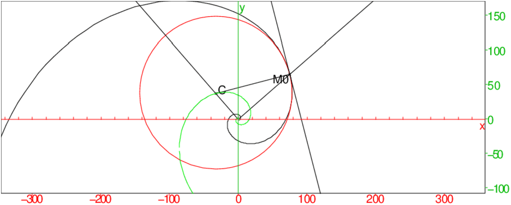

Calcul formel |
Je remercie:
© 2002, 2006 Renée De Graeve, renee.degraeve@wanadoo.fr
La copie, la traduction et la redistribution de ce document sur support
électronique ou papier sont autorisés pour un usage non commercial
uniquement.
L’utilisation de ce document à des fins commerciales est interdite
sans l’accord écrit du détenteur du copyright.
Cette documentation est fournie en l’état, sans garantie d’aucune
sorte. En aucun cas le détenteur du copyright ne pourra être tenu
pour responsable de dommages résultant de l’utilisation de ce
document.
Ce document est disponible à l’adresse Internet suivante :
http://www-fourier.ujf-grenoble.fr/~parisse/cascmd_fr.pdf
Bernard Parisse
Maître de Conférences à l’Université de Grenoble I
Développeur du logiciel de calcul formel giac et de son interface
Xcas.
La version à jour se récupère sur ;
http://www-fourier.ujf-grenoble.fr/~parisse/giac.html
|
|
giac est la bibliothèque C++ de fonctions de calcul formel.
Pour connaitre le numéro de la version de giac que vous utilisez, on
tape :
On obtient par exemple :
Sous Unix, on peut utiliser cette bibliothèque de calcul formel avec plusieurs interfaces :
Cette interface va vous permettre d’ouvrir plusieurs sessions de
calculs : ces sessions ont plusieurs niveaux d’entrée, sont indépendantes
les unes des autres et peuvent être pliée ou dépliée.
Chaque session peut contenir des niveaux d’entrée numérotés qui
contiendront :
^10-1))^100-1))
Au sein d’une même session, les différents niveaux d’entrée ne sont pas
indépendants, par exemple, une variable définie dans une ligne de commandes
pourra être utilisée en géométrie ou dans le tableur.
L’ensemble de toutes ces sessions constitue votre espace de travail.
Le niveau actif est celui où se trouve le curseur et le niveau selectionné
est obtenu quand on clique sur son numéro, numéro qui sécrit alors sur
fond noir.
On peut déplacer un niveau ou un groupe de niveau
dans une session, ou le recopier dans une autre session.
Vous pouvez , à tout moment insérer un nouveau niveau ou encore changer
l’entrée d’un niveau : Enter valide le changement de ce niveau et
sélectionne l’entrée suivante, mais attention les niveaux suivants
ne seront pas recalculés. Il est toutefois possible après une modification
de réexécuter, soit tous les niveaux, soit les niveaux situés
après la modification (menu Edit puis Executer session ou
Executer en-dessous).
Il faut savoir qu’il suffit de faire :
Vous obtenez au démarrage l’ouverture d’une session avec de haut en bas :
\includegraphics[width=\textwidth]{session1}\usepackage{graphicx}Les différentes configurations se font :
On peut avoir de l’aide sur les différentes fonctions de calcul formel de plusieurs façons. On peut cocher la case Aide HTML automatique de la configuration générale pour avoir l’ouverture de l’aide detailléeà chaque appel d’une fonction se trouvant dans les menus ou ne pas cocher cette case pour avoir de l’aide seulement lorqu’on le désire, toutefois une aide succincte apparait dans la ligne des messages à chaque appel d’une fonction se trouvant dans les menus. On peut avoir accès à l’aide générale ou à l’aide par fonction tout le temps (voir ci-dessous).
Il est préférable de mettre les suffixe suivants :
.cxx (ou .map ou .mu ou .ti selon le mode) pour un
script et par exemple,
.xws pour la session de travail,
.cxx pour une fonction,
.tab pour le tableur,
.tex pour le graphique en latex,
.eps pour le graphique et pouvoir ensuite inclure le fichier dans un
texte en latex ou en postscipt,
.png pour le graphique et pouvoir ensuite inclure le fichier dans un
texte en html.
On peut à tout moment faire apparaitre une ligne pour écrire un commentaire
avec Alt+c.
Le commentaire s’écrit sans utiliser de guillemets et apparait en vert.
Le commentaire ne génère pas de réponse.
Le commentaire sert à commenter votre session.
Depuis un commentaire on peut ouvrir le navigateur à une adresse donnée
On tape dans une ligne de commentaire :
On obtient :
Dans une ligne de commentaire, on peut ouvrir le navigateur à une adresse donnée : On tape dans une ligne de commentaire :
On obtient :
Attention
Pour faire un commentaire dans un programme il faut utiliser la commande
comment qui a comme argument une chaîne de caractères ou bien
utiliser // qui doit etre suivi du commentaire et d’un retour à la
ligne. Quand il y a un commentaire dans un programme, tout se qui se trouve
entre // et le retour à la ligne n’est
pas pris en compte par le programme.
On tape :
On tape :
On obtient :
Dans l’éditeur d’expressions, l’affichage ne se fait pas linéairement mais
se fait en dimension 2d.
Quand on a mis une expression dans l’éditeur d’expressions, on peut facilement
sélectionner des sous-expressions et appeler les fonctions des menus sur
ces sous-expressions puis appuyer sur enter pour avoir la réponse en
dessous de l’éditeur d’expressions ou encore évaluer la sélection dans
l’éditeur d’expressions avec le bouton eval.
Dans l’éditeur d’expressions, on peut utiliser les raccourcis suivants sur la
sélection de sous-expressions :
Ctrl+s pour la commande simplify
Ctrl+r pour la commande integrate
Il faut tout d’abord ouvrir un tableur avec Alt+t.
À chaque tableur est attaché un écran de géométrie,
une barre de menu (Fich Edit Statistiques), des boutons
(reeval,val,Save), deux cases (l’une donne le nom du fichier
de sauvegarde et l’autre le nom de la cellule
sélectionnée) et deux lignes (l’une contient une case de sélection et
une ligne dite ligne de commandes qui sert soit à remplir la cellule
sélectionnée, soit à afficher ce que l’on a mis dans la cellule
sélectionnée, et l’autre est la ligne d’état qui rappelle la
configuration du tableur et sert de bouton pour ouvrir un écran de
configuration du tableur).
Si le graphe dépend d’une fonction utilisateur, il faut que la fonction soit définie lorsque le(s) paramètre(s) a (ont) une valeur formelle, ce qui peut se faire en testant le type du paramètre, comme dans l’exemple suivant : Je définis f avec le test du type du paramètre et g sans le test par :
f(x):= {
if (type(x)!=DOM_FLOAT) return 'f'(x);
while(x>0){ x--; }
return x;
}:;
g(x):= {
while(x>0){ x--; }
return x;
}:;
Si je tape :
F:=plotfunc(f(x)) ou G:=plotfunc(g(x)) j’obtiens le même graphe.
Le problème apparait lorsque x n’a pas de valeur et que l’on réutilise
G.
Mais si on fait :
G:=plotfunc(g(x)) puis symetrie(droite(y=x),G)
ou même simplement G on a l’erreur :
"Unable to eval test in loop : x>0.0 Error: Bad Argument Value"
parce que l’évaluation de g(x) ne peut pas se faire si x est formel.
Par contre, F:=plotfunc(f(x)) puis
symetrie(droite(y=x),F) renvoie bien le symétrique du graphe par
rapport à la première bissectrice grâce au test de la ligne :
if (type(x)!=DOM_FLOAT) return ’f’(x);. D’ou l’intérêt de rajouter
le test.
Par contre on peut taper directement sans provoquer d’erreurs :
symetrie(droite(y=x),plotfunc(g(x))).
Explications
Il faut savoir que dans les réponses de certaines commandes
(par exemple G:=plotfunc(g(x))) il va figurer l’expression
formelle de g(x) (par exemple G contient
expr("curve(group[pnt[x+(i)*g(x),x,x,-5.0,5.0125,0]...]))).
Lors de l’évaluation de G il y aura une erreur car x+(i)*g(x)
ne pourra pas être évalué puisque l’évaluation de g(x) provoque
l’évaluation du test x>0 qui ne peut pas être évalué car x
n’a pas de valeur ....d’où une erreur mais si dans
la fonction figure le test : if (type(x)!=DOM_FLOAT) return ’g’(x);
cela supprime l’évaluation de g(x) et donc l’erreur due au test
x>0.
En effet, F:=plotfunc(f(x)) puis
symetrie(droite(y=x),F) renvoie bien le symétrique du graphe par
rapport à la première bissectrice grâce au test de la ligne :
if (type(x)!=DOM_FLOAT) return ’f’(x);.
Par contre on peut taper directement sans provoquer d’erreurs :
symetrie(droite(y=x),plotfunc(g(x)))
Un écran graphique 2-d ou 3-d s’ouvre automatiquement en réponse d’une
commande graphique 2-d ou 3-d. À un écran graphique 2-d ou 3-d est attaché
des boutons situés en haut et à droite de cet écran.
Un écran de géométrie plane s’ouvre avec les touches Alt+g :
c’est un écran graphique 2-d interactif muni de lignes d’entrée, d’une barre
de menus contenant les menus Fich Edit et d’un bouton Save. Cet
écran graphique est interactif : on peut définir des points et des segments
en cliquant avec la souris.
Un écran de géométrie 3-d s’ouvre avec les touches Alt+h :
c’est un écran graphique 3-d muni de lignes d’entrée, d’une barre de
menus contenant les menus Fich Edit et d’un bouton Save.
Les boutons d’un écran graphique 2-d et 3-d sont les mêmes en apparence mais
leurs contenus sont quelquefois différents :
Avant de faire un tracé, il faut régler les différents paramètres de la
configuration de l’écran graphique :
le menu Cfg▸Configuration graphique (cf section 1.6.2) règle les
paramètres de tous les graphiques qui se feront lors de la session. On peut
changer ensuite ses paramètres au coup par coup avec le bouton cfg
attaché à chaque écran graphique (cf3.4).
Les commandes du cas qui ont comme réponses un graphique 2-d ou 3-d
seront tapées dans une ligne d’entrée. Toutefois les commandes du cas
qui ont comme réponses un graphique 2-d peuvent aussi être tapées soit
dans une ligne d’entrée d’un écran de géométrie.
Attention! Un écran de géométrie est un écran graphique
interactif.
Les commandes graphiques se trouvent dans le sous-menu Graphic du menu
Cmds.
Les commandes de géométrie se trouvent dans le menu Geo.
Le bouton cfg permet de régler la fenêtre graphique.
Voir aussi : 1.10.3 et 1.10.5
Il faut employer la commande graph2tex("nom.tex") (ou pour un graphique
3-d graph3d2tex("nom.tex")) pour transformer tous les
graphiques réalisés en le fichier Latex nom.tex.
Ce fichier pourra
être visualisé seul ou bien inséré dans un autre fichier Latex en otant
l’en tête \documentclass{article}...\begin{document}, et le
\end{document} de la fin et de rajouter \usepackage{pstricks}
dans l’en-tête du fichier dans lequel on l’insère.
Attention Dans ce fichier tous les graphiques seront superposés : pour
n’avoir qu’un seul graphique, il faut supprimer les niveaux contenant les
autres graphiques avant de faire graph2tex("nom.tex").
graphe_probabiliste a comme argument une matrice de transition
probabiliste A ayant au plus 7x7 entrées. On peut rajouter en option la
liste des positions des sommets du graph associé à la matrice A.
On tape :
On obtient :
On tape :
On obtient :
On tape :
On obtient :
On tape :
On obtient :
Si on ne met pas les "" autour d’un nom, si ce nom est le nom d’une variable
qui contient une valeur c’est cette valeur que sera affichée sinon les noms
s’afficheront sans "".
On peut aussi définir les points pour définir le graphe, par exemple,
on tape dans un nieau de géométrie 2d :
:
A:=point(0);
B:=point(1);
C:=point(i);
D:=point(2/2+2i/3);
graphe_probabiliste([[1/2,1/3,1/12,1/12],[1/3,1/2,1/6,0],
[0,0,1/2,1/2],[1/4,1/4,1/4,1/4]],[A,B,C,D])
On peut alors bouger les points A,B,C,D en mode pointeur.
On obtient après avoir bougé D :
plot(f(x),x) trace la représentation graphique de y=f(x).
On tape :
^2-2,x)On obtient :
^2-2On peut rajouter un paramètre pour indiquer le saut d’échantillonnage en x c’est à dire le pas en x que l’on veut utiliser pour faire le graphe. On tape :
^2-2,xstep=1)ou encore
^2-2,x,xstep=1)On obtient :
^2-2
On peut aussi spécifier le nombre de points d’échantillonage de la
fonction à représenter en utilisant nstep à la place
de xstep. Par exemple, on tape :
^2-2,x=-2..3,nstep=30)
plot3d a trois arguments une fonction de deux variables (ou une
expression de deux variables ou une liste de trois fonctions de deux variables
ou encore une liste de trois expressions de deux variables) et les noms de ces
deux variables.
plot3d trace la surface définie par le premier argument (soit z=f(x,y), soit x=f(u,v),y=g(u,v),z=h(u,v)).
On peut faire tourner ce graphique selon
l’axe des x, l’axe des y ou l’axe des z. Pour cela, il faut
cliquer avec la souris dans la fenêtre graphique en dehors du
parallélépipéde servant à la représentation, puis faire bouger la
souris (sans relacher son bouton) ou utiliser les touches x, X,
y, Y, z et Z.
On tape :
On obtient :
On tape :
On obtient :
Pour n’avoir qu’une portion de surface on peut indiquer l’intervalle de variation dans le deuxième et le troisème argument.
On tape :
On obtient :
plotinequation([f1(x,y)<a1,..,fk(x,y)<ak],[x=x1..x2,y=y1..y2]) trace la surface du plan définie par les inéquations à 2 variables :
| f1(x,y)<a1 |
| ... |
| fk(x,y)<ak |
| x1<x<x2 |
| y1<y<y2 |
On tape :
^2-y^2<3, [x=-2..2,y=-2..2],xstep=0.1,ystep=0.1)On obtient :
^2-y^2=3 est remplieOn tape :
^2<y], [x-2..2,y=-1..10],xstep=0.2,ystep=0.2)On obtient :
^2 est rempli
Attention
Si on ne met pas les bornes pour x et y ce sont les valeurs de
X-,X+,Y-,Y+ mises dans la configuration générale du graphique
(Cfg▸Configuration graphique) qui
seront prises en compte.
^2,x=0..1,5,trapeze)^2,x=0..1,5,trapeze); plot(x^2,x=0..1,affichage=rouge)^2,x=0..1,5,point_milieu)^2,x=0..1,5,point_milieu); plot(x^2,x=0..1,affichage=rouge)Remarque 1 On peut aussi taper, pour n’avoir que la valeur de l’aire :
^2,x=0..1,5,trapeze)[0,3];On obtient :
Remarque 2 Si on utilise plotarea avec le menu Graphic->Courbes->plotarea une boite de dialogue s’ouvre : vous entrez, l’expression de la fonction, le nom de la variable, les bornes de l’intervalle xmin,xmax, le pas xstep (on a alors n=(xmax-xmin)/xstep), la méthode d’intégration et aussi la couleur du dessin (on retrouve en effet le bouton Attribut en haut et à gauche de la boite de dialogue).
plotcontour(f(x,y),[x,y]) (ou DrwCtour(f(x,y),[x,y]) ou
encore contourplot(f(x,y),[x,y]))
trace les 11 lignes de niveaux z=−10, z=−8,.., z=0, z=2,.., z=10 de la
surface définie par z=f(x,y).
On tape :
^2+y^2,[x=-3..3,y=-3..3],[1,2,3], affichage=[vert,rouge,noir]+[rempli$3])On obtient :
^2+y^2=n pour n=1,2,3; les zones comprises entre ces cercles sont remplies avec la couleur verte,rouge ou noire On tape :
^2-y^2,[x,y])On obtient :
^2-y^2=n pour n=-10,-8,..10Pour visualiser la surface, on tape (plotfunc(f(x,y),[x,y]) trace la représentation graphique de z=f(x,y), voir 3.7.2):
^2-y^2,[x,y])On obtient :
^2+y^2On peut faire tourner ce graphique selon l’axe des x, l’axe des y ou l’axe des z. Pour cela, il faut cliquer avec la souris dans la fenêtre graphique en dehors du parallélépipéde servant à la représentation, puis faire bouger la souris (sans relacher son bouton) ou utiliser aux touches x, X, y, Y, z et Z.
plotdensity(f(x,y),[x,y]) ou
encore densityplot(f(x,y),[x,y])
trace le graphe de z=f(x,y) dans le plan en représentant
z par une des couleurs de l’arc en ciel.
On tape :
^2-y^2,[x=-2..2,y=-2..2],xstep=0.1,ystep=0.1)On obtient :
^2-y^2=z par une couleur de l’arc en cielOn remarquera que l’on a l’echelle des couleurs en dessous du graphe.
plotimplicit ou implicitplot permet de tracer des courbes ou des surfaces définies de façon implicite par une expression. Pour que Xcas ne cherche pas à factoriser l’expression, la commande plotimplicit ou implicitplot peut être utilisée avec l’option unfactored ou sans_factoriser mise comme dernier paramètre, :
Soient n+1 points Pj de contrôle (j=0..n) et L la séquence de ces
points.
La courbe de Bézier ayant les points de la séquence L comme points de
contrôle, a comme équation paramétrique :
∑j=0n comb(n,j)tj(1−t)n−j*L[j].
bezier(L,plot) renvoie le tracé de la courbe d’équation
paramétrique : ∑j=0n comb(n,j)tj(1−t)n−j*L[j].
parameq(bezier(L)) renvoie l’équation paramétrique de la courbe de
Bézier ayant comme points de contrôle les points de la séquence L.
On tape :
On obtient :
On tape :
On obtient :
On tape :
On obtient :
On tape :
On obtient :
plotpolar(f(t),t) trace la représentation polaire
de la courbe définie par : ρ=f(t).
On tape si dans la configuration du graphique t va de 0 à 10 :
On obtient :
On peut rajouter un paramètre (tstep=) pour indiquer le saut d’échantillonnage en t c’est à dire le pas en t que l’on veut utiliser pour faire le graphe. On tape si dans la configuration du graphique t va de 0 à 10 :
ou :
On obtient :
plotseq(f(x),a,n) ou plotseq(f(t),t=a,n) permet de
visualiser les n premiers termes d’une suite récurrente définie par :
u0=a, un=f(un−1)
On tape :
On obtient :
On peut tracer le champ des tangentes de léquation différentielle y′=f(t,y) ou du système déquations différentielles x′=u(x,y),y′=v(x,y) et on peut spécifier les plages de valeurs des paramètres.
On tape :
On obtient :
On tape :
On obtient :
On tape :
On obtient :
On tape :
On obtient :
On peut tracer les solutions de léquation différentielle y′=f(t,y) ou du système déquations différentielles x′=u(t,x,y),y′=v(t,x,y) et on peut spécifier les plages de valeurs des paramètres.
On tape :
On obtient :
On tape :
On obtient le graphe dans l’espace de la solution de
| [h,p]′=[h−0.3 h p, 0.3 h p−p] [h,p](0)=[0.3,0.7] |
Pour avoir le graphe dans le plan, on ajoute l’option plan ou plane
Pour visualiser les valeurs de la solution, se reporter à la section 4.3.6 On tape :
On obtient :
Exemple
On trace 4 solutions du système d’équations différentielles dépendant de 2 paramètre a et b :
x′=−y+b
y′−1+(x−a)2+(y−b)2
Les conditions initiales sont :
pour t=0 x0=a+1,y0=b+0.5
pour t=0 x0=a+1,y0=b+0.1
pour t=0 x0=a+0.827,y0=b+0.827
pour t=0 x0=a−1.1,y0=b+
On tape :
avril(a,b):={
local L;
L:=NULL;
L:=L,affichage(plotode([-y+b,-1+(x-a)^2+(y-b)^2],[t=-3..3,x,y],[0,a+1,b+0.5],
plan),94+epaisseur_ligne_8);
L:=L,affichage(plotode([-y+b,-1+(x-a)^2+(y-b)^2], [t=-3..3,x,y],[0,a+1,b+0.1],
plan),4+epaisseur_ligne_8);
L:=L,affichage(plotode([-y+b,-1+(x-a)^2+(y-b)^2],[t=-6..3.65,x,y],
[0,a+0.827,b+0.827],plan),1+epaisseur_ligne_4);
L:=L,affichage(plotode([-y+b,-1+(x-a)^2+(y-b)^2], [t=-1.3..1.3,x,y],[0,a-1.1,b],
plan),1+epaisseur_ligne_4);
return L;
}:;
Puis on tape par exemple :
affichage(cercle(0,5,3*pi/4,4*pi/3),4+epaisseur_ligne_4); affichage(cercle(0,5,5*pi/3,2*pi+pi/4),4+epaisseur_ligne_4); affichage(segment(5*exp(-i*pi/3),5*exp(-2*i*pi/3)),4+epaisseur_ligne_4); avril(-1.4,-1);
interactive_plotode(f(t,y),[t,y]) trace le champ des tangentes
de l’équation différentielle y′=f(t,y) dans l’écran DispG et
interactive_plotode(f(t,y),[t=a...b,y]) trace le champ des tangentes
pour t allant de a à b de l’équation différentielle y′=f(t,y) dans l’écran DispG.
Lorsqu’on clique sur un point, on obtient le tracé de la solution de
y′=f(t,y) passant par ce point.
On peut faire autant de tracés que l’on veut (un tracé se fait chaque fois
que l’on clique sur un point avec la souris). On termine les tracés en
tapant sur la touche Esc ou Echap.
On peut aussi spécifier, comme dans plotfield, que le champ des
tangentes soit de norme 1 avec l’option normalize.
Attention
Si on ne veut pas de superposition avec les dessins faits auparavant, il ne
faut pas oublier de taper ClrGraph, avant d’utiliser
interactive_plotode, pour effacer l’écran DispG.
On tape :
On obtient :
IL se trouve que l’on sait résoudre cette équation : les solutions sont
y(x)=C*exp(-x)+x et on peut donc vérifier...
On tape :
On obtient :
On tape :
On obtient :
Dans un niveau de géométrie, le menu Graphe->Slopefield/Ode(2d) ouvre une boite de dialogues qui demande :
Lorsqu’on appuie sur OK, l’écran de géométrie est en mode plotode et si l’on a coché Field, le champ des tangentes apparait et la commande correspondante s’inscrit au niveau suivant de l’écran de géométrie, par exemple :
Si on a coché Field et ||=1, et que y′=sin(t*y).
Ensuite, il suffit de cliquer en différents points de lécran de
géométrie pour avoir les tracés des solutions passant par ces points et
les commandes correspondantes stockées dans une variable, par exemple :
Pour terminer, il suffit de changer de mode, par exemple passer en mode
Repere. Il faut noter que le mode plotode n’est pas accessible
directement : on doit réouvrir la boite de dialogue avec le menu
Graphe->Slopefield/Ode(2d).
Si on trouve que le champ des tangentes est génant, on peut le supprimer
facilement en supprimant le niveau correspondant à sa commande.
Xcas permet d’animer des graphes en 2-d, 3-d ou "4D" en calculant une fois pour toute une suite d’objets graphiques et en affichant chaque objet de la sequence en boucle.
Voici comment sont codées les nombres réels lorsque le nombre de chiffres
significatifs demandés est inférieur ou égal à 16 (par exemple
Digits:=15).
On écrit d, un nombre réel ou décimal, sous la forme :
d=2α(1+m) avec 0<m<1 et −210<α≥ 210.
On utilse 64 bits pour représenter ce nombre :
Codage de 2α :
α=0 est codé 011 1111 1111
α=1 est codé 100 0000 0000
α=4 est codé 100 0000 0011
α=5 est codé 100 0000 0100
α=−1 est codé 011 1111 1110
α=−4 est codé 011 1111 1011
α=−5 est codé 011 1111 1010
α=210 est codé 111 1111 1111
α=2−10−1 est codé 000 0000 0000.
Remarque
2−52=0.2220446049250313e−15
On peut évaluer une expression numérique grâce à la
commande evalf ou approx.
En mettant un deuxième argument n à evalf (ou approx), on
peut spécifier le nombre de chiffres significatifs de l’approximation.
Mettre ce deuxième argument a l’avantage de ne pas modifier la valeur de
Digits (i.e. la case Chiffres de la configuration du CAS).
Attention l’affichage tiendra compte de la valeur p de Digits
si p<15 et si le deuxième argument n de evalf est
supérieur à p mais les calculs seront faits avec n chiffres
significatifs.
Exemple 1
Avec Digits:=12.
On tape : a:=1234+1/7
On obtient : 8639/7
On tape : b:=evalf(a,9)
On obtient : 1234.14286 (9 chiffres significatifs avec un arrondi)
On tape : c:=evalf(a,16)
On obtient : 0.1234142857142857e4 (16 chiffres significatifs)
On tape : d:=evalf(a,21)
On obtient : 0.123414285714285714286e4 (21 chiffres significatifs)
On tape : 7*a,7*b,7*c,7*d
On obtient :
8639,8639.00002,0.8639000000000001e4,0.863900000000000000000e4
Mais avec Digits:=7.
On tape : a:=1234+1/7
On obtient : 8639/7
On tape : b:=evalf(a,9)
On obtient : 1234.143 (à l’affichage juste 7 chiffres significatifs)
On tape : b-1234
On obtient : 0.14286 (ce qui prouve que b vaut 1234.14286)
On tape : b-1234.14286
On obtient : 0.0 (ce qui prouve encore que b vaut 1234.14286)
On tape : c:=evalf(a,16)
On obtient : 0.1234142857142857e4
On tape : d:=evalf(a,21)
On obtient : 0.123414285714285714286e4
Exemple 2
Avec Digits:=7 ou si dans la configuration du cas (menu Cfg)
on a choisit Chiffres=7.
On tape :
On obtient :
On tape :
On obtient :
On tape :
On obtient :
ce qui montre que evalf(sqrt(2),3) est le nombre 1.414
On tape :
On obtient :
On obtient toujours un affichage avec 7 chiffres significatifs si n est supérieur ou égal à 7 :
On tape :
On obtient toujours lorsque Digits:=7) :
ce qui montre que Xcas fait les calculs avec 14 chiffres significatifs.
Par contre, dés que le 2-ième argument n de evalf est
strictement supérieur à 14 l’affichage se fait avec n chiffres
significatifs.
On tape :
On obtient :
On tape :
On obtient :
et cela n’a pas modifié la configuration du CAS.
On peut changer le nombre de chiffres significatifs avec la variable
DIGITS ou Digits.
On tape :
Cela a pour effet de changer Configuration du CAS et de mettre 20 dans la case Chiffres.
On obtient 20 chiffres significatifs :
Notation : Le nombre réel 10−4 est un nombre exact alors que
1e−4 est un nombre approché.
On tape :
^-5)On obtient :
On tape :
^15)On obtient :
On tape :
^-5On obtient si Digits:=20:
Remarques On tape :
On obtient :
On tape :
On obtient :
On tape :
On obtient :
On tape :
On obtient :
On tape :
On obtient :
On tape :
On obtient :
Attention
Si vous définissez une fonction F(a) qui renvoie une séquence formée
par un nombre fractionnaire p/q et un entier n alors evalf(F(a))
renvéra une approximation de p/q avec n chiffres significatifs !
Il faut donc écrire evalf([F(a)]) pour avoir une liste constituée
d’une approximation de p/q et de n.
nSolve permet de résoudre numériquement des équations non
polynomiales : f(x)=0 pour x ∈ ]a,b[ (nSolve est une commande
compatible ti).
Les paramètres de nSsolve sont f(x)=0, x, ou x=x0
où x0 est un point de ]a,b[.
On tape :
On obtient soit :
soit une solution complexe :
En effet, si on ne précise pas la valeur qui démarre
l’itération, Xcas démarre l’itération avec une valeur aléatoire
réelle ou complexe.
On vérifie :
cos(-9.10998745394-2.95017086176*i)=-9.10998745394-2.95017086176*i
On tape :
On obtient :
On tape :
On obtient :
fsolve permet de résoudre numériquement des
équations non polynomiales : f(x)=0 pour x ∈ ]a,b[.
fsolve a comme arguments f(x)=0 et x=a..b ou f(x)=0, x et a..b.
fsolve donnera aussi les racines numériques complexes si dans la
configuration du CAS on a coché Complexe. Si Complexe est
décoché il faut utiliser cfsolve pour avoir les racines numériques
complexes.
On tape :
Ou on tape :
On obtient :
On peut rajouter en dernier argument la valeur de l’échantillonage en
spécifiant la valeur de xstep ou la valeur de nstep (nombre de
découpages de l’intervalle ]a,b[).
On tape :
On obtient :
On tape :
On obtient :
On peut utiliser différents algorithmes pour résoudre numériquement
f(x)=0 pour x ∈ ]a,b[.
Si on veut indiquer la mèthode, les paramètres de fsolve sont
f(x)=0, x, a..b ou
selon les méthodes un point x0 de ]a,b[ et le nom de la méthode
utilisée.
Les différentes méthodes sont détaillées ci dessous.
On propose six méthodes pour résoudre numériquement des systèmes
d’équations de la forme f(x)=0.
Remarque
fsolve donnera aussi les racines numériques complexes
si dans la
configuration du CAS on a coché Complexe. Si Complexe est
décoché il faut utiliser cfsolve pour avoir les racines numériques
complexes.
Trois méthodes utilisent la matrice jacobienne f′(x) et leurs noms se
terminent par j_solver.
Les trois autres méthodes utilisent des méthodes d’approximation de
f′(x) et utilisent uniquement f.
Les six méthodes utilisent une itération de type Newton :
xn+1=xn−f′(xn)−1*f(xn).
Les quatre méthodes hybrid*_solver utilisent aussi une méthode de
descente de gradient lorsque l’itération Newtonienne donne un pas trop
grand.
La longueur du pas est calculé sans facteur d’échelle pour hybrid_solver et hybridj_solver
ou avec facteur d’echelle (calculé à partir de f′(xn)) pour
hybrids_solver et hybridsj_solver
cfsolve effectue la résolution numérique sur ℂ d’une équation ou
d’un système, même si Complexe est décoché dans la
configuration du CAS.
fsolve donne aussi les racines numériques complexes d’une équation ou
d’un système si dans la configuration du CAS on a coché Complexe.
On tape :
On obtient :
On tape :
On obtient :
On tape :
^2+y+2,x+y^2+2],[x,y])On obtient :
proot a comme argument un polynôme ou le vecteur de
composantes les coefficients d’un polynôme (par ordre décroissant).
proot renvoie un vecteur dont les composantes sont les racines
numériques non multiples du polynôme.
On peut mettre en option un entier n pour préciser le nombre n de chiffres
significatifs de la réponse.
Pour chercher les racines numériques de P(x)=x3+1, on tape :
ou on tape :
^3+1) On obtient :
On tape pour avoir 20 chiffres significatifs :
ou on tape :
^3+1) On obtient :
On tape pour avoir les racines numériques de x2−3 :
ou :
^2-3)On obtient :
On tape pour avoir les racines numériques de P(x)=x2−3 avec 20 chiffres significatifs :
ou on tape :
^2-3,20) On obtient :
On tape pour avoir les racines numériques de P(x)=x10−15*x8+90*x6−270*x4+405*x2−243 :
ou on tape :
^10-15*x^8+90*x^6-270*x^4+405*x^2-243) On obtient :
Pour avoir les factorisations numériques de :
d’une matrice, on se reportera à la section 6.59.
Les constantes physiques (sous-menu Constante), les fonctions de conversion (sous-menu Unit_convert), les préfixes (sous-menu Unit_prefix) et les unités classées par thème, se trouvent dans le menu Phys.
e ou %e désigne le nombre exp(1);
pi ou %pi désigne le nombre π.
infinity désigne ∞.
+infinity ou inf désigne +∞.
-infinity ou -inf désigne −∞.
i ou %i désigne le nombre complexe i.
euler_gamma désigne la constante d’Euler γ.
On a :
euler_gamma est égal à limit(sum(1/k,k,1,n)-ln(n),n,+infinity).
On peut évaluer une expression booléenne grâce à la
commande evalb cette commande sert surtout pour la compatibilité Maple
car en Xcas, les booléens sont toujours évalués.
On tape :
Ou on tape :
On obtient :
On tape :
Ou on tape :
On obtient :
Dans tout ce paragraphe, on peut utiliser des entiers de Gauss (nombres complexes de la forme a+i*b avec a et b dans ℤ), à la place des entiers dans les différentes fonctions.
Une permutation p de longueur n est une bijection de [0..n−1] sur
[0..n−1] et est représentée par la liste :
[p(0),p(1),p(2)...p(n−1)].
Par exemple, la permutation p représentée par [1,3,2,0] est
l’application de [0,1,2,3] sur [0,1,2,3] définie par :
p(0)=1, p(1)=3, p(2)=2, p(3)=0.
Un cycle c d’ordre p est représenté par la liste
[(a0,...,ap−1)] (0≤ p≤ n−1) et c’est une permutation telle que :
c(ai)=ai+1 pour (i=0..p−2), c(ap−1)=a0 et
c(ai)=ai (i=p+1..n).
Un cycle c est représenté par la liste et une décomposition en
cycles par une liste de listes.
Par exemple, le cycle c représenté par la liste [3,2,1] est la
permutation c définie par c(3)=2, c(2)=1, c(1)=3, c(0)=0 (qui est
représenté en tant que permutation par la liste [0,3,1,2]).
Vous trouverez dans le menu Math (Cmplx) les fonctions
ayant comme paramètre une expression à valeur complexe.
Remarque
Les nombres complexes sont utilisés pour représenter un point sur l’écran graphique : par exemple, le graphe de y=f(x) est l’ensemble des points x+i*f(x) pour x
variant entre WX- et WX+ (WX- et WX+ sont initialisés
avec le menu Cfg▸Configuration graphique).
Un opérateur est une fonction infixée.
Les polynômes sont représentés par des expressions ou par la liste de leurs coefficients par ordre de puissances décroissantes. Dans le premier cas la variable utilisée par défaut est x. Pour les polynômes à coefficients dans ℤ/nℤ, appliquez % n à l’expression ou à chaque coefficient de la liste.
On peut faire des calculs modulo p c’est à dire dans ℤ/pℤ ou dans ℤ/pℤ[x] et la façon de s’y prendre dépends de la syntaxe choisie :
^2+3*x-1)%13 ou ^2+3%13*x-1%13.
Remarques
Voir aussi 6.51.5 and 8.
Fonctions utiles pour les statistiques dont les donn’ees sont des
listes :
^2=size(l)*stddev(l)^2/(size(l)-1).
Soit A la liste [0,1,2,3,4,5,6,7,8,9,10,11].
On tape :
A:=[0,1,2,3,4,5,6,7,8,9,10,11]
On obtient :
11/2 pour mean(A)
sqrt(143/12) pour stddev(A)
0 pour min(A)
[1.0] pour quantile(A,0.1)
[2.0] pour quantile(A,0.25)
[5.0] pour median(A) ou pour quantile(A,0.5)
[8.0] pour quantile(A,0.75)
[9.0] pour quantile(A,0.9)
11 pour max(A)
[[0.0],[2.0],[5.0],[8.0],[11.0]] pour quartiles(A)
Voir aussi ces fonctions pour les matrices à la section 6.51.5 et
pour les listes pondérées au chapitre 8.
Une table est une liste indicée par quelque chose de plus général que des
entiers.
Une table peut être utilisée, par exemple, pour stocker des numèros de
téléphone indicés par des noms.
Dans Xcas, les indices d’une table peuvent être n’importe quels objets
de Xcas.
L’accés se fait par un algorithme qui trie par type puis
utilise l’ordre de chaque type (par exemple < pour le type numérique,
l’ordre lexicographique pour les chaines etc...).
Par exemple pour définir une table représentant une matrice creuse, on
peut mettre des indices doubles entre des parenthèses. La commande
matrix permet de transformer une table ainsi définie en une matrice.
Inversement table permet de transformer une matrice en une table.
table a comme argument une liste ou une séquence d’égalité de la
forme :
"nom_index"=valeur_element.
table renvoie cette table.
On tape :
On tape :
On obtient :
On tape :
On obtient :
Pour définir une matrice creuse par une table, on tape par exemple :
Ou on tape de façon plus simple, on peut définir la variable B à l’aide d’une multi-affectation, à condition que la variable B soit purgée :
On tape :
On obtient :
Attention
B n’est pas une matrice mais une table ! On obtient facilement une
matrice à partir de B avec convert(B,array) ou matrix(B).
On tape :
On obtient :
On tape :
Ou on tape de façon plus simple :
On obtient :
Remarque
On peut faire toutes les opérations matricielles sur les tables par exemple :
B*B, B+B
Ne pas oublier de faire purge(B) avant de définir la variable
B à l’aide d’une multi-affectation.
Exemple
On veut coder les lettres "a","b",.."z" par 1,2,....26.
On tape :
alphab:="abcdefghijklmnopqrstuvwxyz";
puis :
code:=table(seq(alphab[j]=j+1,j=0..25));
On tape
code["c"]
On obtient 3
ou bien on écrit une fonction :
Code(a):={
local code,alphab,j;
alphab:="abcdefghijklmnopqrstuvwxyz";
code:=table(seq(alphab[j]=j+1,j=0..25));
return code(a);
};
On tape
Code("c")
On obtient 3
Remarque
Si on fait une affectation du type T[n]:= ... où T est le nom
d’une variable et n un entier
Une matrice est representée par une liste de listes de même longueur.
Dans les réponses de Xcas, les matrices sont parenthésées avec
[]. Par exemple, [1,2,3] désigne la matrice [[1,2,3]] qui a une seule ligne, alors que [1,2,3] désigne la liste [1,2,3].
Dans ce document, on utilise la notation habituelle ( [[1,2,3]]) pour les
matrices renvoyées comme réponses.
Voir aussi 6.43.1 pour les différentes norme d’un vecteur.
La factorisation des matrices renvoie en général des matrices numériques et quelquefois des matrices symboliques.
Dans tout ce paragraphe, on appelle "matrice augmentée" du système A*X=B la matrice formée par la matrice A bordée à droite par le vecteur colonne B ("matrice augmentée" du système A*X=B=border(A,tran(B))).
Pour le calcul numérique de solutions déquations différentielles on se reportera à odesolve et pour la représentation graphique de solutions déquations différentielles on se reportera à plotfield, plotode, interactive_plotode.
dayofweek(j,m,a renvoie 0 pour dimanche, 1 pour lundi ...6 pour samedi pour çindiquer le jour de la semaine qui correspond à la date donnée en argument date supérieure au 15 octobre 1582. On tape :
On obtient :
Donc le 15 octobre 1582 était un vendredi. En effet le calendrier grégorien
date du 15 octobre 1582 (le lendemain du jeudi 4 octobre 1582 fut le vendredi
15 octobre 1582 car avant les annèes bissextiles étaient tous les 4 ans ce
qui donne comme durée moyenne de l’annèe civile 365.25 jours alors que la
révolution de la terre autour du soleil est plus courte (365.242 jours)
d’où un décalage qui était de 10 jours en 1582.
Avec la nouvelle règle (la dernière année de chaque siécle est
bissextile si son millésime est divisble par 400) l’écart n’est plus
que de l’ordre de 1 jour tous les 3000 ans.
On tape :
On obtient :
Donc le 1ier octobre 2014 était un mercredi.
Soit une courbe Γ lieu des points M=M(t) de coordonnées
x(t),y(t),z(t) dans un repère orthonormé Oxyz.
Le vecteur directeur de la tangente à Γ est le premier vecteur
T= dpM/dtp qui ne soit pas nul.
À chaque tangente en M on associe :
une infinité de plans tangents qui sont les plans contenant T et
une infinité de normales qui sont toutes perpendiculaires en M à T et
qui forment le plan normal en M.
Comment se place la courbe par rapport à un certain plan Π tangent en M
à Γ ?
Soit N la normale qui est perpendiculaire à Π en M.
Soit M1 un point de Γ et m1 la projection de M1 sur T.
Mm1 a le sens de (t1−t)pdpM/dtp ( dpM/dtp étant le premier vecteur derivé de OM non nul.
M1 est dans la même région par rapport à Pi que le vecteur
(t1−t)qdqM/dtq où (t1−t)qdqM/dtq est la première des dérivées suivantes qui soit non nulles et non situés dans Pi
Soit une courbe Γ lieu des points M=M(t) de coordonnées
x(t),y(t),z(t) dans un repère orthonormé Oxyz.
On suppose que x(t),y(t),z(t) sonr continues , dérivables et à
dérivées continues.
On note dM/dt le vecteur de coordonnées
x′(t),y′(t),z′(t) qui est un vecteur tangent à Γ quelque soit t.
On introduit un nouveau paramétre s pour Γ pour que
dM/ds soit unitaire c’est à dire tel que :
ds2=dx2+dy2+dz2
Cette relation définie da dérivée de s par rapport à t au signe
près :
ds/dt=√x′(t)2+y′(t)2+z′(t)2 si on oriente
Γ selon les t croissants,
ds/dt=−√x′(t)2+y′(t)2+z′(t)2 si on oriente
Γ selon les t décroissants.
On appelle abscisse curviligne à partir de l’origine M0=M(t0), la
fonction s(t) ayant pour dérivée :
ds/dt=√x′(t)2+y′(t)2+z′(t)2 (ou ds/dt=−√x′(t)2+y′(t)2+z′(t)2 selon l’orientation choisie)
et telle que s(t0)=0.
La tangente orientée de Γ au point M est alors :
τ= dM/ds qui est le vecteur :
en coordonnées cartésiennes :
τ=(dx/ds,dy/ds,dz/ds).
en coordonnées semi-polaires
τ=(dρ/ds,ρ dθ/ds,dz/ds).
Soit une courbe Γ lieu des points M=M(t) de coordonnées
x(t),y(t),z(t) dans un repère orthonormé Oxyz.
Le vecteur directeur de la tangente à Γ est le premier vecteur
dpM/dtp qui ne soit pas nul.
Considérons le cas le plus courant où
dM/dt et d2M/dt2 sont non
nuls et non colinéaires.
Le plan osculateur est le plan des deux vecteurs
dM/dt et d2M/dt2 et plus
généralement le plan des deux premiers vecteurs :
dpM/dtp et dp+hM/dtp+h qui
ne sont ni nuls et ni colinéaires.
Remarque Le plan osculateur comme la tangente ne dépend pas du
paramètre utilisé.
Le vecteur d2M/ds2=dτ/ds est donc dans le
plan osculateur et il est orthogonal à τ.
On appelle normale principale l’intersection du plan normal (plan
perpendiculaire à la tangente τ) et du plan osculateur.
Soit n le vecteur unitaire de la normale principale orientée dans le sens
de la concavité i.e. selon dτ/ds
Lorsque Γ est une courbe du plan Oxy : son plan osculateur est le plan Oxy.
La torsion d’une courbe plane est nulle.
Soit α l’angle (Ox,τ. On a alors :
1/Rdα/ds et donc :
ds/dα=R
Soit ν tel que (τ ν)=π/2, on a ;
dτ =ν dα et si c est le centre de courbure en M on a :
MC= ds/dαν
On appelle développée d’une courbe plane Γ, le lieu des centres de
courbure de Γ : c’est aussi l’enveloppe de ses normales.
Exemple
Trouver la développée de la spirale logarithmique :
ρ=3eθ/2.
On tape :
developpee([3*exp(t/2)*cos(t),3*exp(t/2)*sin(t)],t,affichage=2))
On obtient :

Définition : Développante d’une courbe plane
On appelle développante d’une courbe plane Γ les courbes admettant
Γ comme développée.
On va décrire les différentes fonctions statistiques sur un exemple :
avec la liste A:=[0,1,2,3,4,5,6,7,8,9,10,11]
- en prenant comme série statistique d’effectif 1 la liste A, ou
- en prenant comme série statistique la liste A avec comme effectifs
encore la liste A.
On tape :
A:=[0,1,2,3,4,5,6,7,8,9,10,11]
On pourra se reporter aussi à 6.44 lorsque les arguments sont
des listes et à 6.51.5 lorsque les arguments sont des matrices.
On continue à utiliser la liste A dans les exemples.
On tape :
On peut exécuter une fonction pas à pas, en utilisant le debuggeur :
on se sert de l’instruction debug avec comme argument une fonction et ses
arguments et cela permet d’exécuter la fonction pas à pas. On a alors la
possibilité de voir l’évolution des variables de son choix (on se reportera
pour plus de détails à la section 9.7).
Un bloc d’instructions ou une séquence d’instructions doit être
parenthésé soit par {}, soit par begin et end.
Entre ces accolades (ou entre begin et end) on met les
instructions en les terminant par un point-virgule ;
Toutes les commandes graphiques faites dans une ligne d’entrée auront en
réponse l’ouverture d’un écran graphique.
Les dessins de la géométrie 2-d se font en général dans un écran de
géométrie 2-d qui est un écran graphique interactif muni d’un
éditeur de commandes et d’une barre de menus (on ouvre un écran de
géométrie 2-d avec Alt+g).
Les dessins faits dans un écran de géométrie 2-d sont interactifs :
on peut définir des points et des segments avec la souris et modifier une
figure en faisant bouger un de ses points avec la souris.
nodisp appliqué à une commande permet de ne pas afficher
la réponse, même quand il s’agit d’une commande graphique.
On peut aussi terminer la commande par :; pour ne pas générer de
réponse.
On tape :
On obtient :
On tape :
Ou on tape :
puis
On obtient :
nodisp permet de définir un objet géométrique sans le
tracer. On peut ensuite tracer l’objet en mettant comme commande son nom,
mais alors, son nom n’apparaitra pas sur la figure.
On peut aussi définir un objet géométrique et utiliser eval.
On tape :
Ou on tape :
puis on tape :
Ou on tape :
On obtient :
L’affectation d’un objet géométrique dans une variable permet de
définir cet objet géométrique et de le
tracer avec une légende ayant comme nom, le nom de la variable.
Si on veut donner à cet objet géométrique un nom différent de celui de
la variable, on peut définir l’objet géométrique avec une affectation qui
se termine par :; et utiliser legende. Voici des
exemples :
On tape :
Ou on tape :
Le point B est défini mais n’est pas tracé.
puis on tape :
Ou on tape :
On obtient :
Remarque
Si on veut définir l’objet géométrique sans le
tracer, puis le faire apparaitre avec son nom, on peut aussi utiliser
eval (voir la commande eval6.14.2).
On tape :
Ou on tape :
Le point B est défini mais n’est pas tracé.
puis on tape :
Ou on tape :
Ou on tape :
Ou on tape :
On obtient :
Si on tape :
On obtient :
Pour pouvoir faire une démonstration en géométrie, il suffit de demander au calcul formel de faire les calculs, en choisisant bien les paramètres du problème et ces paramètres doivent être formels....En géométrie les points peuvent avoir des coordonnèes exactes ou numériques ou formelles. Mais pour faire une figure, il faut affecter les paramètres formels. On peut le faire de différentes façons :
^2+1)
Pour les dessins dans l’espace voir la section 11.7
Voir aussi : 11.7.1 pour la géométrie 3-d.
Pour les dessins dans l’espace voir la section 11.8
Voir aussi : 11.9 pour la géométrie 3-d.
Les graphes ou les dessins de la géométrie 3-d se font dans un écran
graphique 3-d qui s’ouvre automatiquement en réponse d’une commande graphique
3-d.
Les dessins de la géométrie 3-d se font en général dans un écran de
géométrie 3-d qui est un écran graphique muni d’un éditeur
de commandes et d’une barre de menus at que l’on ouvre avec Alt+h.
Si on clique dans la fenêtre graphique avec la souris, en dehors du
parallélépipéde servant à la représentation,
on peut faire tourner les axes x, y ou z, soit avec les touches x,
X, y, Y, z, Z, soit en bougeant la souris
sans relacher son bouton. Cela modifie l’axe de vision (axe passant par
l’observateur et de vecteur directeur la direction de la visée de l’objet) et
le plan de vision (plan perpendiculaire à l’axe de vision dont l’équation
est inscrite en haut de l’écran). Le plan de vision est matérialisé par
son intersection avec le parallélépipéde servant à la représentation,
ces droites d’intersection sont dessinée en pointillé.
On peut aussi translater le plan de vision, le long de l’axe de vision grâce
à la molette de la souris : les plans successifs sont obtenus par une
translation de vecteur parallèle à l’axe de vision.
On peut se servir d’attributs pour faire une représentation
graphique 3-d comme la couleur, l’épaisseur, les lignes en pointillé pour
cela voir 10.3. Mais, les points ont toujours la forme d’un
carré et il faut mettre une epaisseur d’au moins 3 si on veut le voir
(point_width=3).
On peut faire des dessins en perspective ou en repère orthonormé (en
cochant Proj_ortho dans la configuration graphique (bouton cfg)),
les surfaces sont transparentes ou non et peuvent être éclairées par 8
spots que l’on peut placer en diffèrents endroits repérés par leur
coordonnées homogènes (on configure ses spots avec les boutons
l0,l1..l7 situés dans la configuration graphique).
Ces dessins sont interactifs :
on peut faire bouger, avec la souris, les points situés dans le plan de
vision, et aussi déplacer ces points, avec la molette de la souris, sur une
parallèle à l’axe de vision .
À noter que l’on peut aussi faire un zoom-in ou un zoom-out à l’aide des boutons in et out (voir 3.4).
Si dans la configuration du graphique,
on coche hidden3d, la surface sera tracée sans dessiner les lignes
qui sont cachées et si on veut voir les lignes cachées on décoche
hiden3d (voir aussi 1.6.2).
Pour la traduction Latex de l’écran 3-d on se reportera à la section
1.10.5.
Les angles d’Euler sont utilisés pour modifier le repère de visualisation.
Rappel
Soient deux repères : l’ancien (Oxyz) et le nouveau (OXYZ).
Soit Ou l’intersection du plan (OY,OZ) avec le plan (Ox,Oz) que l’on
oriente arbitrairement.
Soient :
On définit complètement la mise en place de (OXYZ) par rapport à
(Oxyz) en donnant les angles a,b,c de (OXYZ) par rapport
à (Oxyz) et en effectuant la composition de ces trois rotations :
Rc@Rb@Ra.
Les angles d’Euler sont :
a=(Oz,Ou),
b=(Ov,OX),
c=(Ou,OZ).
Les dessins de la géométrie 3-d se font en choissisant comme repère
Oxyz, Ox horizontal dirigé vers la droite, Oy vertical dirigé vers le
haut et l’axe des z qui pointe vers vous.
Les mesures en degré de a,b,c sont mises dans ry,rz,rx.
Selon l’orientation de Ou, les valeurs de a,b,c ne sont pas uniques :
a,b,c et a+180,180−b,c+180 mettent en place le même repère OXYZ,
Lorsque b est un angle droit, c’est à dire que l’axe OX et l’axe Oy
ont le même support on n’a pas non plus unicité:
a,90,c et a+c,90,0 mettent en place le même repère OXYZ et
a,−90,c et a−c,−90,0 mettent en place le même repère OXYZ.
On peut donc choisir, l’angle b dans ]−90,90[ et les angles a et c
dans ]−180,180] ou bien b dans −90,90 c=0 et a dans ]−180,180].
Le principe est de rajouter, si necessaire, un paramètre pour définir le plan du triangle et définir aussi l’orientation de ce plan. Pour la géométrie plane voir 10.10.
Voir aussi : 10.11 pour la géométrie plane.
Le principe est de rajouter si necessaire un paramètre pour définir le
plan du quadrilatère et définir aussi l’orientation de ce plan.
Voir aussi : 10.12 pour la géométrie plane.
Le principe est de rajouter si necessaire un paramètre pour définir le
plan du polygone et définir aussi l’orientation de ce plan.
Voir aussi : 10.13.1 pour la géométrie plane.
cercle, en géométrie 3-d, a comme argument :
À noter que dans les 2 cas, le premier et le troisième argument
peuvent être les coordonnées du point.
On tape :
Ou on tape :
Ou on tape :
On obtient :
On tape :
Ou on tape :
Ou on tape :
On obtient :
Pour les construire, on donne le centre, un sommet et un 3ème
point définissant un plan de symétrie.
Pour accélérer les calculs, il peut être utile faire seulement des
calculs approchés en utilisant evalf dans l’argument : on tapera,
par exemple :
cube_centre(evalf([0,0,0],[3,2,1],[1,1,0]))
Soit la variable a on peut donner sont type soit en la renommant soit en
mettant : puis son type :
a_i ou a:integer pour signifier que a est de type entier
a_d ou a:double ou a:real pour signifier que a est de type réel
a_c ou a:complex pour signifier que a est de type complexe
a_v ou a:vector pour signifier que a est de type vecteur
a_m ou a:matrix pour signifier que a est de type matrice
a_s ou a:string pour signifier que a est de type chaîne
de caractères
On peut utiliser giac à l’intérieur d’un programme C++ en
mettant au début du programme par exemple essai.cc :
#include<giac/giac.h>
puis en compilant le compilant avec :
c++ -g essai.cc -lgiac -lgmp
et en l’exécutant en mettant :
./a.out
Exemple
// -*- compile-command: "g++ -g pgcd.cc -lgiac -lgmp" -*-
#include <giac/giac.h>
using namespace std;
using namespace giac;
gen pgcd(gen a,gen b){
gen q,r;
for (;b!=0;){
r=irem(a,b,q);
a=b;
b=r;
}
return a;
}
int main(){
cout << "Entrer 2 entiers";
gen a,b;
cin >> a >> b;
cout << pgcd(a,b) << endl;
return 0;
}
On peut définir de nouvelles fonctions qui deviendront des fonctions de giac. Pour définir par exemple la fonction de nom pgcd ( et c’est l’instruction : const string _pgcd_s("pgcd"); qui définit le nom de la fonction), on tape :
// -*- mode:C++ ; compile-command: "g++ -I.. -fPIC -DPIC
-g -c pgcd.cpp -o pgcd.lo && ln -sf pgcd.lo pgcd.o && gcc
-shared pgcd.lo -lc -Wl,-soname -Wl,libpgcd.so.0 -o
libpgcd.so.0.0.0 && ln -sf libpgcd.so.0.0.0 libpgcd.so.0 &&
ln -sf libpgcd.so.0.0.0 libpgcd.so" -*-
using namespace std;
#include <stdexcept>
#include <cmath>
#include <cstdlib>
#include <giac/giac.h>
#include "pgcd.h"
#ifndef NO_NAMESPACE_GIAC
namespace giac {
#endif // ndef NO_NAMESPACE_GIAC
gen pgcd(gen a,gen b){
gen q,r;
for (;b!=0;){
r=irem(a,b,q);
a=b;
b=r;
}
return a;
}
gen _pgcd(const gen & args){
if ((args.type!=_VECT)||(args._VECTptr->size()!=2))
setsizeerr();
vecteur &v=*args._VECTptr;
return pgcd(v[0],v[1]);
}
const string _pgcd_s("pgcd");
unary_function_unary __pgcd(&_pgcd,_pgcd_s);
unary_function_ptr at_pgcd (&__pgcd,0,true);
#ifndef NO_NAMESPACE_GIAC
} // namespace giac
#endif // ndef NO_NAMESPACE_GIAC
On compile avec la commande située après compile-command de
l’en-tête du programme. Puis, pour l’insérer dans
une session Xcas, il faut taper la commande insmod
suivi du chemin absolu complet de la librairie, par exemple :
insmod("/home/user/giac-0.4.0/doc/en/libpgcd.so").
Cela suppose que le source de giac a été désarchivé dans le
répertoire /home/user).
Ce document a été traduit de LATEX par HEVEA